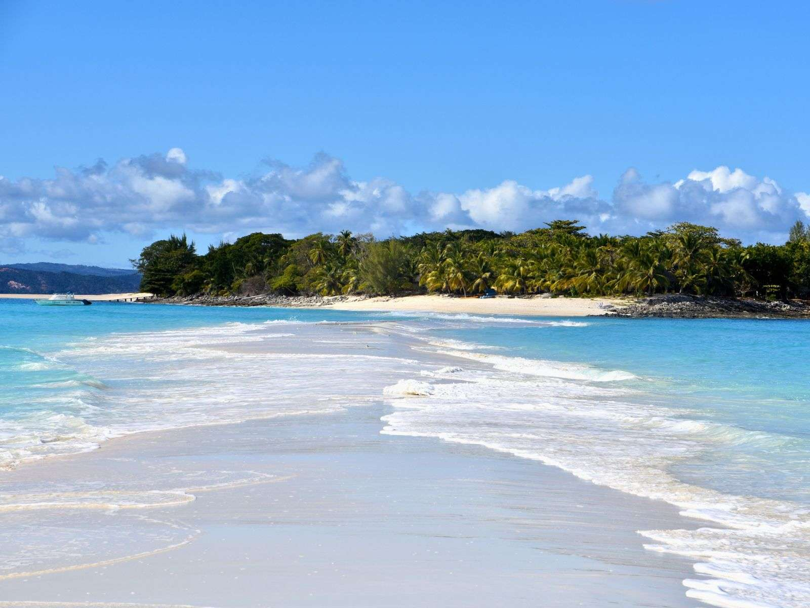
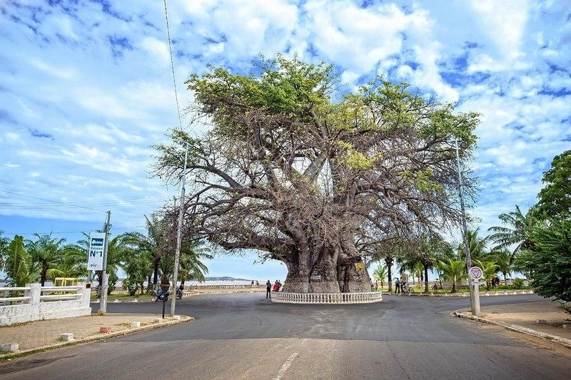
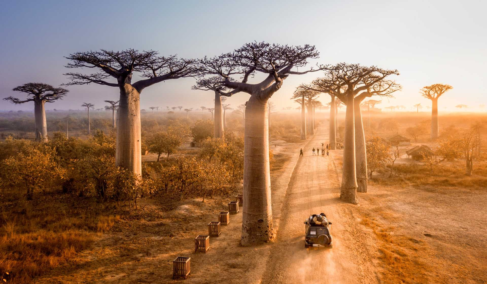

Antsiranana

Antsiranana ist eine wunderschöne Stadt im Norden Madagaskars. Sie liegt an einer großen Bucht und ist für ihre beeindruckenden Landschaften bekannt. Die Stadt besitzt koloniale Gebäude, lebhafte Märkte und eine vielfältige Kultur. In der Umgebung gibt es Nationalparks, Strände und besondere Tierarten. Antsiranana ist ein wichtiger Hafen und ein beliebtes Reiseziel für Touristen, die Natur, Abenteuer und madagassische Traditionen entdecken möchten. Die Einwohner sind freundlich und gastfreundlich.
Antananarivo

Antananarivo ist die Hauptstadt Madagaskars und liegt im zentralen Hochland der Insel. Die Stadt ist bekannt für ihre historischen Gebäude, lebhaften Märkte und die besondere Mischung aus traditioneller und moderner Kultur. Viele Menschen leben dort und arbeiten in Handel, Dienstleistungen und Verwaltung. Die Hügelstadt bietet schöne Aussichten, enge Straßen und zahlreiche Sehenswürdigkeiten. Antananarivo ist das politische, wirtschaftliche und kulturelle Zentrum des Landes. Sie verbindet verschiedene Regionen und zeigt die vielfältige Geschichte sowie die Identität Madagaskars.
Nosy Be

Nosy Be ist eine wunderschöne Insel im Nordwesten Madagaskars und ein beliebtes Reiseziel. Die Stadt Hell-Ville ist das wichtigste Zentrum der Insel. Nosy Be ist bekannt für ihre traumhaften Strände, das klare türkisfarbene Wasser und die vielfältige Natur. Besucher können exotische Tiere, Gewürzplantagen und Meereslandschaften entdecken. Die Insel bietet viele Aktivitäten wie Tauchen, Bootsausflüge und Wanderungen. Nosy Be verbindet Ruhe, Abenteuer und die einzigartige Kultur Madagaskars.
Mahajanga

Mahajanga ist eine große Hafenstadt im Nordwesten Madagaskars am Mosambik-Kanal. Die Stadt ist bekannt für ihre schönen Strände, den berühmten Baobab-Baum und ihre lebhafte Atmosphäre. Mahajanga besitzt eine reiche kulturelle Vielfalt mit verschiedenen ethnischen Gruppen und Traditionen. Besucher können Märkte, historische Orte und die wunderschöne Küstenlandschaft entdecken. Die Stadt ist auch ein wichtiges Zentrum für Handel und Fischerei. Mahajanga bietet eine Mischung aus Entspannung, Natur und madagassischer Kultur.
Toliara

Toliara ist eine Stadt im Südwesten Madagaskars und liegt an der Küste des Mosambik-Kanals. Sie ist bekannt für ihr warmes Klima, ihre wunderschönen Strände und die einzigartige Natur. Die Region bietet beeindruckende Landschaften mit Baobab-Bäumen, Korallenriffen und dem berühmten Nationalpark Tsimanampetsotsa. Toliara ist auch ein wichtiges Zentrum für Handel, Fischerei und Kultur. Besucher können die traditionelle madagassische Lebensweise entdecken und die Vielfalt der Region genießen.